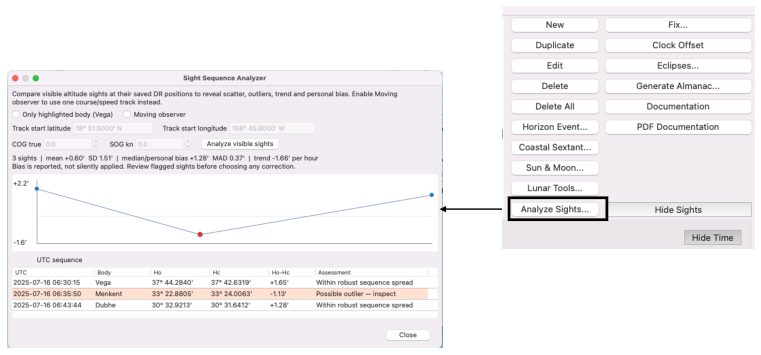

| Previous | Contents | Next |
Altitude sights and coastal navigation · Page 20 of 70
5. Analyze sights using Sight Sequence Analyzer (new feature 2.8.x)
This form will analyze every sight with “eyes” ON. The objective of this tool is to plot Ho-Hc (Y-axis) against UT time. The observer can see “outliers” in a run of sights. If there were a run of 3 sights for each body, there would have been 9 observations which could have been plotted. This tool plots the Sights with “eyes”. If a sight is a true outlier, turn off the “eye” of the outlier. Plot a large sample of sights in the “Sights” list and see your personal error and bias.
 |
| Open illustration at full size |
| Previous | Contents | Next |